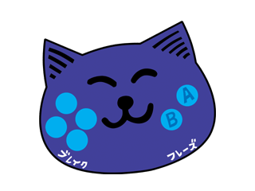

▲index
｜
ステージ１
｜
ステージ２
｜
ステージ３
｜
ステージ４
｜
ステージ５
｜
ステージ６
｜
おまけコーナー
｜
もろもろ
喫茶カウンセルにいつもいる、
店員のおねえさんと常連の男性たち。
いつも静かにお茶を楽しんでいるようだけど、
近頃よく訪れるお客さん(あなた)のことが
気になっている様子。
マスターとあなたの会話には、
ついつい耳を澄ましてしまう。
音で遊ぶおもちゃ。
ボタンを押すと
ネコの声やドラムパターンが再生される。
一見、幼児向けのカンタンなおもちゃだが、
リズムにノってうまく操作すると
けっこうカッコいいプレイが出来てしまう、
ちょっとしたリズムマシーンなのだ！
ライブのネタにいかが？
ニャーン。

告白マシーンの中でおどって、
みんなの恋を応援している男の子。
恋人募集中だそうです。
ラブさんもがんばって！
本物の馬になることを夢見る機械の馬。
最高速はなんと240km/hを超えるらしい！
すごーい！
ウラにこだわるナゾの男。
頭の発光部分が、ウラとリンクしている。
ここでいうウラとは音楽的なウラを意味していて、
決してハラ黒いとか密かに悪さをしている
というニュアンスのものではないのだ〜。
工場で生産されているマネキンの頭部。
品質管理は徹底されており、
市場に出回る不具合品は ほとんどないという。
その工場ではリズムにノって作業をすることが
義務付けられており、
それが品質を保つヒケツなのだそうだ。
ドラムの演奏に人生をかけるサムライ。
見かけによらず、タイトでテクニカルなプレイを好む。
つぶらなひとみの奥で、プレイヤーのリズム感を見定める。
ドラムを演奏するあなたの仮の姿。
なかなかサマになっているんでないかな？
シブいっすー！
ライブに登場する女の子バンド。
ラブリーな彼女たちが演奏する曲は
明るくて勇気の出てくるものばかり。
でもちょっと甘ずっぱいメロディーもあったりしてとってもイイカンジ。
ライブに登場する男の子バンド。
クールな彼らが演奏するステージは
クライマックスを盛り上げる巧みな構成だ。
曲目が進むにつれ、より切なく
そしてアップテンポに…
ライブに登場するドラムサムライのバンド。
管楽器をメインに繰り広げられる
グルーヴィーなインストゥルメンタル。
イカしたサウンドに酔いしれ
リラックスしたりノリノリになったりして
気持ちよくなっちゃおう！
ライブハウスの掃除をしている女性。
がんばっているみんなを応援している。
おばちゃんのなにげない言葉で
ギョーカイにとどまったミュージシャンは
意外と多いらしい。
ライブハウスのオーナー。
コワモテの男性だが、音楽活動にがんばる若者を
「仲間」として陰でささえている。
某プロダクションの敏腕プロデューサー。
自身の音楽活動と新人の育成に余念がない。
みための軽さとは裏腹に、とてもストイック。
▲index
｜
ステージ１
｜
ステージ２
｜
ステージ３
｜
ステージ４
｜
ステージ５
｜
ステージ６
｜
おまけコーナー
｜
もろもろ
リズム天国トップ
｜
リズムでゲーム！？
｜
ユニークなリズムゲームが40種類！
｜
オマケ要素も盛りだくさん